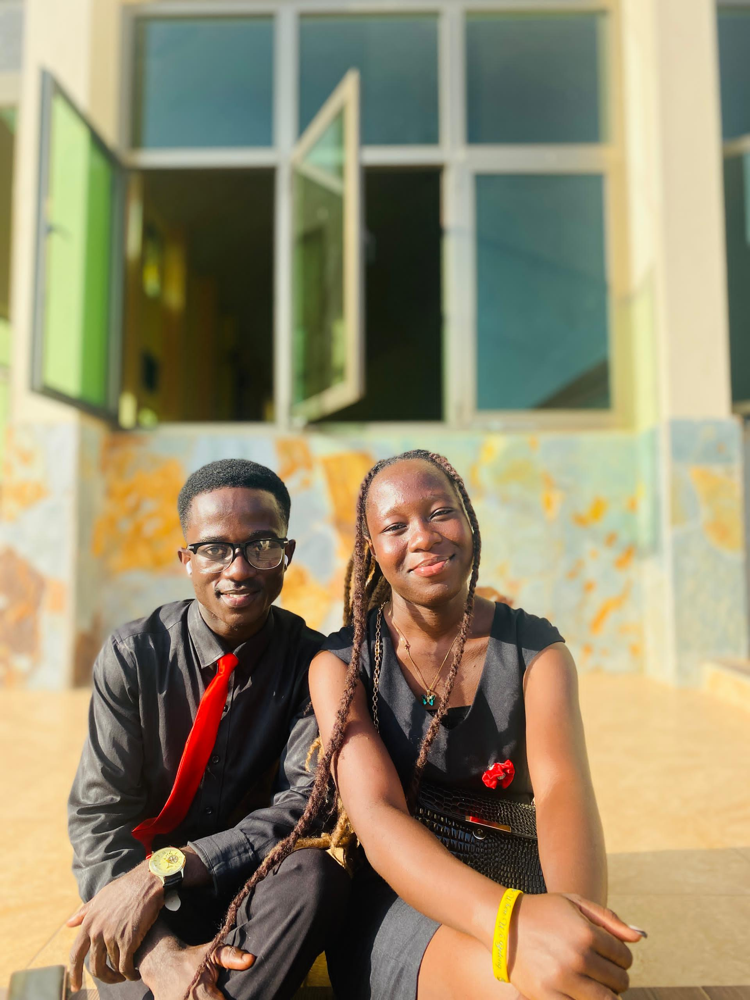
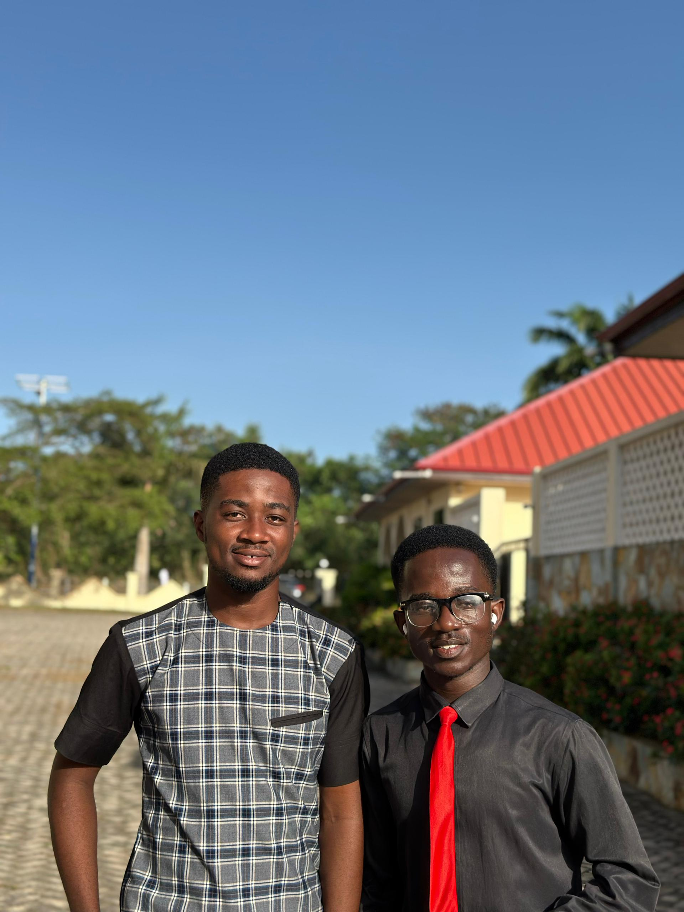
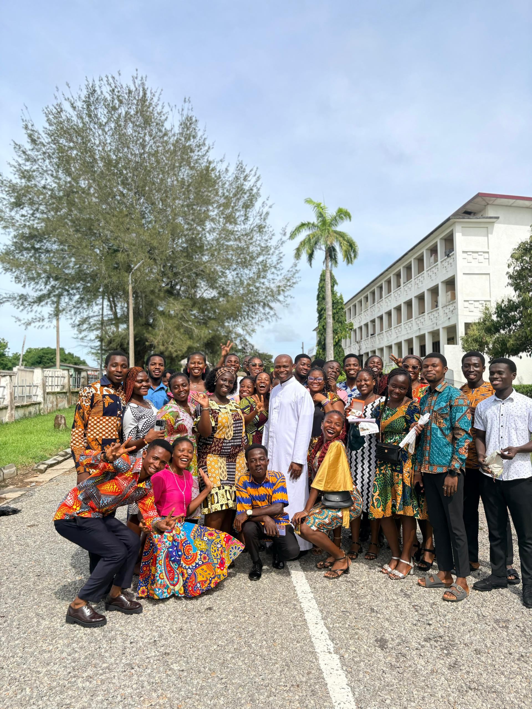
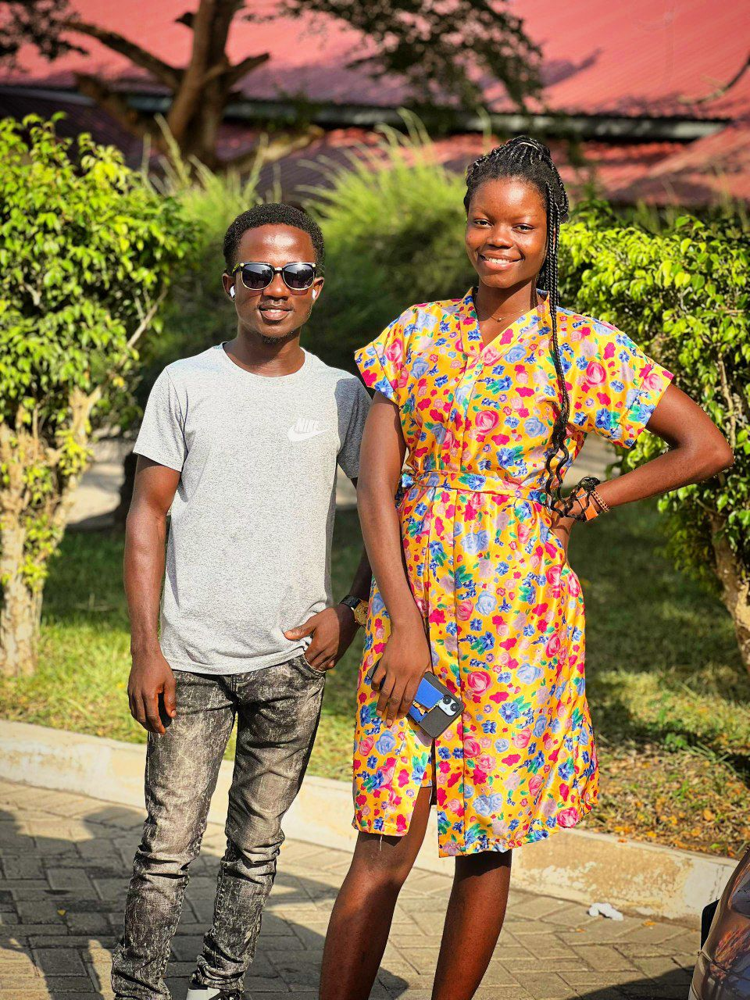
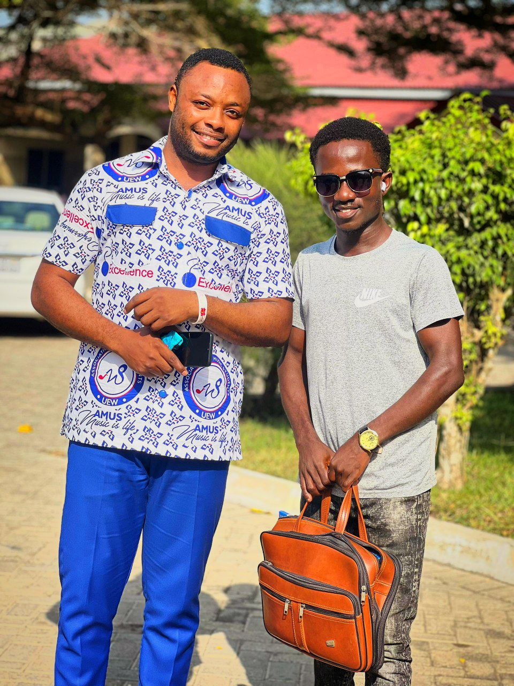
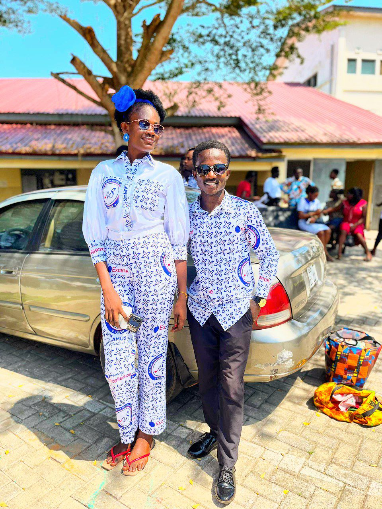

01
Academic Excellence
I have always taken my education seriously. I challenge myself to learn, grow, and make the most of every educational opportunity available to me.
Hello, I'm Nketia Marfo. Welcome to my personal website — a space where I share ideas, stories, projects, experiences, and things I'm learning along the way.
I am curious about education, economics, music, culture, society, creativity, and the opportunities available to young people.
Here, I explore questions, share what I create, and document ideas that matter to me.

“I am interested in the space where education, creativity, music, economics, and opportunity meet.”

I enjoy learning, asking questions, creating, and looking for connections between ideas that may seem unrelated.
My interests include education and economics, while music and culture remain important parts of how I express myself and understand the world around me.
This website is a place to keep growing, creating, and sharing that journey.
My journey has been shaped by learning, service, music, leadership, curiosity, and the opportunities I have found along the way.
I have always taken my education seriously. I challenge myself to learn, grow, and make the most of every educational opportunity available to me.
My academic performance has opened doors for me. Receiving a full scholarship based on my academic promise reminded me that dedication and hard work can create opportunities.
I do not want to learn simply to complete an assignment or pass an examination. I enjoy asking questions, understanding ideas more deeply, and discovering how what I learn connects to the world around me.

Some of the things I have learned have come from my own initiative. I enjoy exploring new skills and teaching myself beyond what I am formally required to learn.

I believe knowledge becomes more meaningful when it can help someone else. I have supported younger students academically, helping them prepare for important examinations and encouraging them to believe in their own abilities.
One experience that means a lot to me is the opportunity I had to tutor JHS 3 students. Seeing 22 students gain admission to senior high school showed me that even a small investment of time and knowledge can make a real difference in someone's future.

Music has given me opportunities to lead as well as perform. Through my involvement in a youth choir of about 40 members, I learned to take responsibility, work with others, and help create something that is greater than any one person.
As a pianist and singer, I have learned that ability grows through patience and consistent practice. My musical journey has taught me to keep improving, even when progress takes time.
I want what I learn and what I can do to be useful to other people. Whether through teaching, music, or community involvement, I find purpose in using my abilities to support and encourage others.

When I see something that needs to be done, I try not to wait for someone else to take the first step. I have learned to recognize opportunities to contribute and to turn ideas into action.

I do not see myself as belonging to only one area. My experiences have allowed me to explore academics, music, teaching, leadership, creativity, and practical problem-solving.
I am still becoming the person I want to be. I carry with me a strong academic foundation, a love for learning, a commitment to service, a passion for music, and a desire to contribute meaningfully wherever I go.

Tutoring JHS 3 students taught me that impact does not always begin with something large. Sometimes it begins with sitting beside someone, explaining an idea, and helping them believe they can move forward.
This website brings together the subjects, questions, creative interests, and opportunities that continue to shape my thinking.
Thoughts about learning, education, skills, and opportunities.
Exploring work, money, development, opportunity, and society.
Sharing my interest in music, creativity, performance, and culture.
Exploring ideas and possibilities that can turn knowledge and creativity into something meaningful.
I am interested in the questions that exist between different fields — education and opportunity, music and culture, economics and society.
The more I learn, the more I realize that meaningful ideas often appear when different subjects meet.
Curiosity • Creativity • LearningA few ideas I am exploring through writing, observation, creativity, and curiosity.
Exploring the relationship between education, skills, work, and opportunity.

Thinking about how music and creativity can connect with meaningful opportunities.

Exploring society, environmental issues, and the questions behind them.

I am still learning, creating, asking questions, and discovering where the journey will lead. Every experience adds another piece to the story.

Have an idea, question, opportunity, or something interesting to discuss?
Email me at: nketiamarfo157@gmail.com
Visit my Contact page →